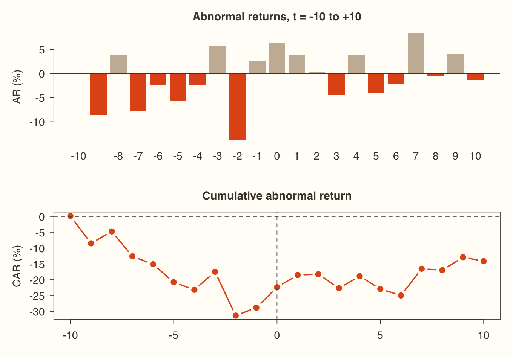
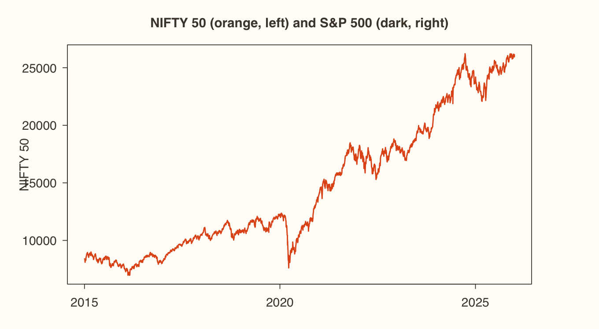
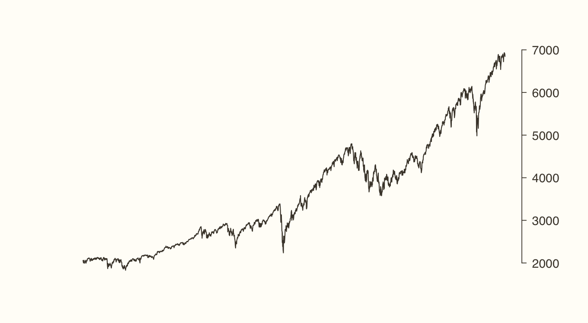
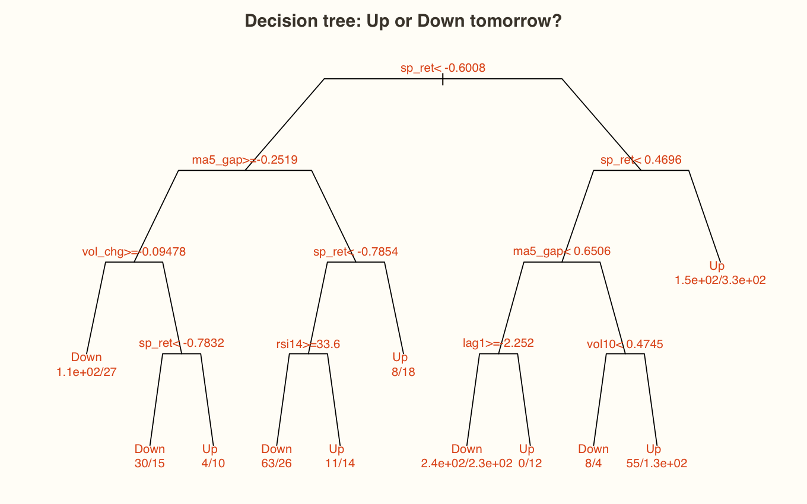
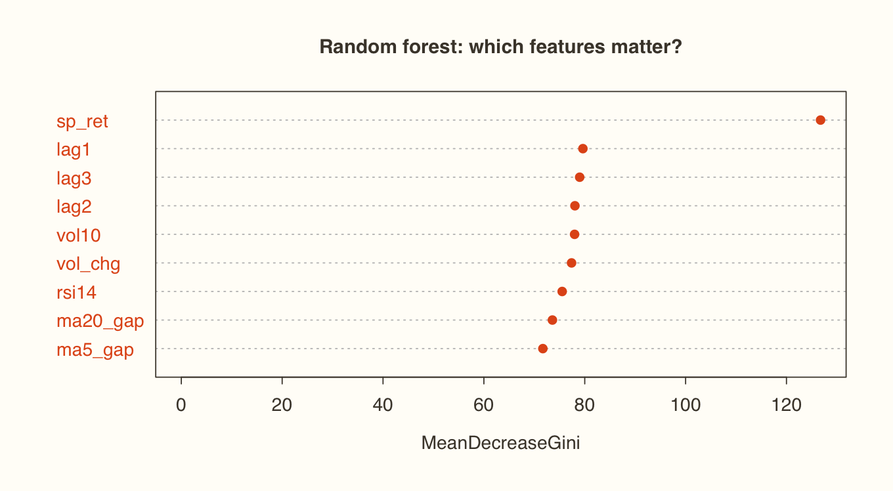
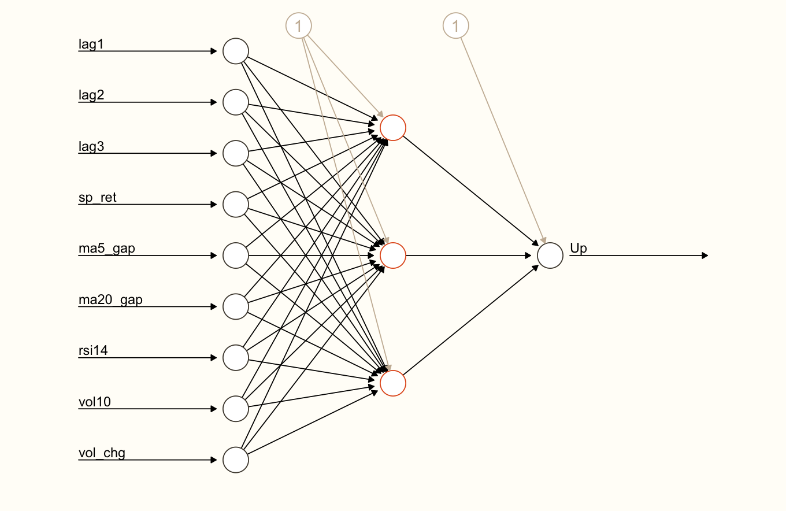
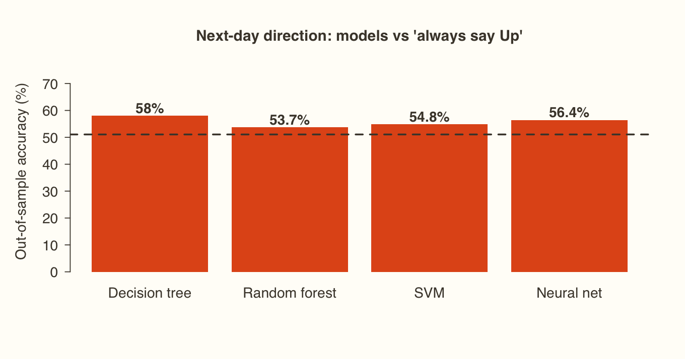

Session 6.1
Event study: the COVID-19 lockdown and NIFTY 50 An event study measures how a specific piece of news moved a price, whether the news was a war, a policy announcement, an earnings surprise or a pandemic. The idea is to compare what actually happened with what would have happened without the event.
The timeline Window Purpose Here Estimation window Estimate "normal" returns 120 trading days before the event window Event day (t = 0) The first trading day under the news 25 March 2020, the first session of India's national lockdown Event window Measure the reaction t = −10 to t = +10 (21 trading days)
The formulas Expected return under the constant-mean model : E[R] is the average return over the estimation window. The market model (E[Rᵢ] = α + βRₘ) or Fama–French are the research-grade alternatives.Abnormal return : ARₜ = Rₜ − E[R]Cumulative abnormal return : CAR = Σ ARₜt-statistics : t = AR₀ / σ_est for the event day, and t = CAR / (σ_est × √L) for a window of L days. If |t| > 1.96, the effect is significant at 5%.R Copy
library(xts)
url <- "https://xploreai.co.in/courses/fda-r/data/"
rust <- "#E2571B"; espresso <- "#4A4238"
nifty <- read.csv(paste0(url, "NIFTY50.csv"))
nifty$Date <- as.Date(nifty$Date)
nifty <- subset(nifty, Date >= as.Date("2019-09-01") & Date <= as.Date("2020-05-31"))
returns_df <- data.frame(Date = nifty$Date[-1], Return = diff(log(nifty$Close)))
event_date <- as.Date("2020-03-25")
event_index <- which(returns_df$Date == event_date)
est_window <- 120; event_window <- 10
est_data <- returns_df[(event_index - event_window - est_window):(event_index - event_window - 1), ]
evt_data <- returns_df[(event_index - event_window):(event_index + event_window), ]
range(est_data$Date); range(evt_data$Date)Console output
[1] "2019-09-13" "2020-03-09"
[1] "2020-03-11" "2020-04-13" Abnormal and cumulative abnormal returns R Copy
exp_ret <- mean(est_data$Return)
sd_est <- sd(est_data$Return)
evt_data$EventTime <- -event_window:event_window
evt_data$AR <- evt_data$Return - exp_ret
evt_data$CAR <- cumsum(evt_data$AR)
evt_data$t_AR <- evt_data$AR / sd_est
print(transform(evt_data, Return = round(Return * 100, 2), AR = round(AR * 100, 2),
CAR = round(CAR * 100, 2), t_AR = round(t_AR, 2)), row.names = FALSE)Console output
Date Return EventTime AR CAR t_AR
2020-03-11 0.07 -10 0.11 0.11 0.10
2020-03-12 -8.67 -9 -8.63 -8.52 -7.68
2020-03-13 3.74 -8 3.78 -4.74 3.36
2020-03-16 -7.92 -7 -7.88 -12.62 -7.02
2020-03-17 -2.54 -6 -2.50 -15.11 -2.22
2020-03-18 -5.72 -5 -5.68 -20.79 -5.06
2020-03-19 -2.45 -4 -2.41 -23.20 -2.15
2020-03-20 5.67 -3 5.71 -17.49 5.09
2020-03-23 -13.90 -2 -13.86 -31.35 -12.35
2020-03-24 2.48 -1 2.52 -28.83 2.24
2020-03-25 6.41 0 6.46 -22.38 5.75
2020-03-26 3.82 1 3.86 -18.52 3.44
2020-03-27 0.22 2 0.26 -18.26 0.23
2020-03-30 -4.48 3 -4.44 -22.70 -3.95
2020-03-31 3.75 4 3.79 -18.90 3.38
2020-04-01 -4.08 5 -4.04 -22.95 -3.60
2020-04-03 -2.08 6 -2.04 -24.99 -1.82
2020-04-07 8.40 7 8.44 -16.54 7.52
2020-04-08 -0.50 8 -0.45 -17.00 -0.40
2020-04-09 4.07 9 4.11 -12.89 3.66
2020-04-13 -1.30 10 -1.26 -14.15 -1.12 R Copy
CAR_full <- sum(evt_data$AR)
t_CAR <- CAR_full / (sd_est * sqrt(nrow(evt_data)))
cat("Event-day AR:", round(evt_data$AR[evt_data$EventTime == 0] * 100, 2), "% t =",
round(evt_data$t_AR[evt_data$EventTime == 0], 2), "\n")
cat("CAR(-10,+10):", round(CAR_full * 100, 2), "% t =", round(t_CAR, 2), "\n")Console output
Event-day AR: 6.46 % t = 5.75
CAR(-10,+10): -14.15 % t = -2.75 How to read it Two numbers tell the story. On the event day NIFTY actually rose , with a large positive abnormal return. Markets had sold off for weeks, and the relief rally came as the lockdown and early stimulus took shape. Over the full window , though, the CAR is deeply negative and its |t| is well above 1.96, so the period around the lockdown destroyed significant value. Always read the event day and the window separately.
Visualise R Copy
par(mfrow = c(2, 1), mar = c(3, 4.2, 2.6, 1))
barplot(evt_data$AR * 100, names.arg = evt_data$EventTime, col = ifelse(evt_data$AR < 0, rust, "#C9B8A3"),
border = NA, ylab = "AR (%)", main = "Abnormal returns, t = -10 to +10")
abline(h = 0, col = espresso)
plot(evt_data$EventTime, evt_data$CAR * 100, type = "b", pch = 19, col = rust, lwd = 2,
xlab = "", ylab = "CAR (%)", main = "Cumulative abnormal return")
abline(v = 0, h = 0, col = espresso, lty = 2)
par(mfrow = c(1, 1))Plot output

R shown, not run here Copy
write.csv(evt_data, "event_study_results.csv", row.names = FALSE) # saved to getwd()Try it Narrow the window to [−3, +3] or [−1, +1] by changing event_window, then re-run. Shorter windows isolate the news itself. Longer windows capture how the market digested it.
Session 6.2
Does the US lead India? Causality between NIFTY and the S&P 500 This applies Module 4 end to end: stationarity, then lags, then Johansen, then a VAR or VECM, then Granger.
R Copy
sp <- read.csv(paste0(url, "SP500.csv"))
nf <- read.csv(paste0(url, "NIFTY50.csv"))
price_data <- na.omit(merge(data.frame(Date = nf$Date, nifty_close = nf$Close),
data.frame(Date = sp$Date, sp500_close = sp$Close), by = "Date"))
price_data$Date <- as.Date(price_data$Date)
dim(price_data)R Copy
par(mar = c(3, 4.5, 3, 4.5))
plot(price_data$Date, price_data$nifty_close, type = "l", col = rust, lwd = 1.6, xlab = "", ylab = "NIFTY 50",
main = "NIFTY 50 (orange, left) and S&P 500 (dark, right)")
par(new = TRUE)
plot(price_data$Date, price_data$sp500_close, type = "l", col = espresso, lwd = 1.2, axes = FALSE, xlab = "", ylab = "")
axis(4); par(mar = c(5, 4, 4, 2) + .1)Plot output

Plot output

Step 1: orders of integration R Copy
library(urca)
nifty_d <- diff(price_data$nifty_close); sp_d <- diff(price_data$sp500_close)
c(nifty_level = summary(ur.df(price_data$nifty_close))@teststat,
nifty_diff = summary(ur.df(nifty_d))@teststat,
sp_level = summary(ur.df(price_data$sp500_close))@teststat,
sp_diff = summary(ur.df(sp_d))@teststat)Console output
nifty_level nifty_diff sp_level sp_diff
2.5084 -35.6152 2.5102 -34.8503 How to read it Both levels are above −1.95 and both differences are far below it, so both indices are I(1) . Next stop: Johansen.
Step 2: lags and cointegration R Copy
library(vars)
VARselect(data.frame(nifty_d, sp_d), lag.max = 10, type = "const")$selection
jo <- ca.jo(data.frame(nifty = price_data$nifty_close, sp500 = price_data$sp500_close),
type = "trace", ecdet = "const", K = 2)
cbind(test = round(jo@teststat, 2), jo@cval)Console output
AIC(n) HQ(n) SC(n) FPE(n)
8 3 1 8
test 10pct 5pct 1pct
r <= 1 | 7.87 7.52 9.24 12.97
r = 0 | 18.62 17.85 19.96 24.60 How to read it The r = 0 statistic is below its 5% critical value, so we can't reject "no cointegration". NIFTY and the S&P 500 don't share a stable long-run path, so a VECM is the wrong tool. Use a VAR on the differenced (stationary) series instead. Note that ca.jo() needs K ≥ 2 even if the selected lag is 1.
Step 3: the VAR on daily changes R Copy
diff_data <- data.frame(nifty = nifty_d, sp500 = sp_d)
var1 <- VAR(diff_data, lag.max = 5, ic = "AIC", type = "const")
round(coef(var1)$nifty[1:4, ], 4) # NIFTY equation: does the S&P lead?
round(coef(var1)$sp500[1:4, ], 4) # S&P equation: does NIFTY lead?Console output
Estimate Std. Error t value Pr(>|t|)
nifty.l1 -0.1050 0.0202 -5.1860 0.0000
sp500.l1 0.9677 0.0668 14.4813 0.0000
nifty.l2 -0.0010 0.0203 -0.0511 0.9593
sp500.l2 0.3410 0.0699 4.8814 0.0000
Estimate Std. Error t value Pr(>|t|)
nifty.l1 -0.0045 0.0061 -0.7342 0.4629
sp500.l1 -0.0520 0.0202 -2.5725 0.0102
nifty.l2 0.0057 0.0062 0.9226 0.3563
sp500.l2 0.0596 0.0211 2.8170 0.0049 Step 4: Granger causality in both directions R Copy
library(lmtest)
k <- var1$p
grangertest(nifty ~ sp500, order = k, data = diff_data)
grangertest(sp500 ~ nifty, order = k, data = diff_data)Console output
Granger causality test
Model 1: nifty ~ Lags(nifty, 1:5) + Lags(sp500, 1:5)
Model 2: nifty ~ Lags(nifty, 1:5)
Res.Df Df F Pr(>F)
1 2612
2 2617 -5 45.4 <2e-16 ***
---
Signif. codes: 0 ‘***’ 0.001 ‘**’ 0.01 ‘*’ 0.05 ‘.’ 0.1 ‘ ’ 1
Granger causality test
Model 1: sp500 ~ Lags(sp500, 1:5) + Lags(nifty, 1:5)
Model 2: sp500 ~ Lags(sp500, 1:5)
Res.Df Df F Pr(>F)
1 2612
2 2617 -5 2.12 0.06 .
---
Signif. codes: 0 ‘***’ 0.001 ‘**’ 0.01 ‘*’ 0.05 ‘.’ 0.1 ‘ ’ 1 How to read it S&P → NIFTY : F ≈ 45 with a p-value of essentially zero, so the US Granger-causes India. NIFTY → S&P : p ≈ 0.06, which isn't significant at 5%. Causality is unidirectional, from the US to India . The VAR coefficients agree: sp500.l1 in the NIFTY equation is large and highly significant.
Watch out Part of this is the clock. The US market closes about 10 hours after India's on the same calendar date. So a row that pairs "today's" S&P close with "tomorrow's" NIFTY is really pairing consecutive sessions, and one lag of the S&P is effectively news that India hasn't traded yet. Here the lead–lag is real, but it isn't mysterious.
Session 6.3
The machine learning framework for finance Machine learning means programming computers to optimise a criterion from data, so that they learn the patterns themselves instead of being given an equation. It sits at the cognitive end of the analytics ladder from Session 1.1.
Why it matters in finance now: data has exploded, storage is cheap, decisions need to be fast, and markets are noisy and non-linear , which linear models miss.
Two families Training data Labelled (we know the answer) Unlabelled Continuous target Regression (predict the return)n/a Categorical target Classification (predict Up or Down)n/a Goal Predict Cluster similar observationsFinance example Next-day direction, credit default Grouping stocks by behaviour, fraud anomalies
The models in Session 6.4 Model How it works Use it when… Linear regression A straight-line equation You need an interpretable baseline Decision tree A sequence of if/then splits You want readable trading rules or threshold effects Random forest Hundreds of trees, then a majority vote The data is noisy and you need robustness Support vector machine (SVM) Finds the widest boundary between classes, curved by a kernel Up and Down aren't separated by a straight line Neural network Layers of weighted nodes There's lots of data and hidden interactions
Watch out The traps that matter most in finance
Overfitting : a model that memorises the past and fails tomorrow.
Structural breaks : relationships change, for example after COVID.
Look-ahead bias : using information you wouldn't have had at the time.
Data snooping : re-running until something "works". Choosing the right design matters more than choosing a fancy algorithm.
Session 6.4
Machine learning in R: predicting NIFTY's direction Target: will NIFTY close Up or Down tomorrow? The regression version predicts the size of the return.
Features , all known at the close of day t and used to predict day t+1 :
the last three days' returns the S&P 500's return the 5-day and 20-day moving averages relative to price the 14-day RSI the 10-day volatility the change in volume R shown, not run here Copy
install.packages(c("TTR", "caret", "rpart", "randomForest", "e1071", "neuralnet"))R Copy
library(TTR)
nf <- read.csv(paste0(url, "NIFTY50.csv")); sp <- read.csv(paste0(url, "SP500.csv"))
d <- na.omit(merge(data.frame(Date = nf$Date, close = nf$Close, volume = nf$Volume),
data.frame(Date = sp$Date, sp_close = sp$Close), by = "Date"))
d <- subset(d, Date >= "2018-01-01" & volume > 0)
d$ret <- c(NA, diff(log(d$close))) * 100
d$sp_ret <- c(NA, diff(log(d$sp_close))) * 100
d$lag1 <- d$ret; d$lag2 <- c(NA, head(d$ret, -1)); d$lag3 <- c(NA, NA, head(d$ret, -2))
d$ma5_gap <- (d$close / SMA(d$close, 5) - 1) * 100
d$ma20_gap <- (d$close / SMA(d$close, 20) - 1) * 100
d$rsi14 <- RSI(d$close, 14)
d$vol10 <- runSD(d$ret, 10)
d$vol_chg <- c(NA, diff(log(d$volume)))
# the target is TOMORROW's return: every feature is known today
d$next_ret <- c(d$ret[-1], NA)
d$Direction <- factor(ifelse(d$next_ret > 0, "Up", "Down"))
ml_df <- na.omit(d)
nrow(ml_df); table(ml_df$Direction)Console output
[1] 1867
Down Up
859 1008 Split by time, not at random R Copy
predictors <- c("lag1", "lag2", "lag3", "sp_ret", "ma5_gap", "ma20_gap", "rsi14", "vol10", "vol_chg")
cut <- floor(0.8 * nrow(ml_df))
train <- ml_df[1:cut, ]; test <- ml_df[(cut + 1):nrow(ml_df), ]
range(train$Date); range(test$Date)
fml_reg <- as.formula(paste("next_ret ~", paste(predictors, collapse = " + ")))
fml_cls <- as.formula(paste("Direction ~", paste(predictors, collapse = " + ")))Console output
[1] "2018-01-31" "2024-06-04"
[1] "2024-06-05" "2025-12-30" Watch out The lecture uses a random 80/20 split (sample()) and same-day features. On time series both leak the future into training and inflate accuracy . Here we train on 2018 to early 2024 and test only on the later period the model has never seen. That's how you'd use the model in practice.
1. Linear regression (the baseline) R Copy
library(caret)
lm_model <- lm(fml_reg, data = train)
round(summary(lm_model)$coefficients, 4)
lm_pred <- predict(lm_model, test)
c(adj_R2 = round(summary(lm_model)$adj.r.squared, 4),
RMSE = round(RMSE(lm_pred, test$next_ret), 3), MAE = round(MAE(lm_pred, test$next_ret), 3),
RMSE_naive = round(RMSE(rep(mean(train$next_ret), nrow(test)), test$next_ret), 3))Console output
Estimate Std. Error t value Pr(>|t|)
(Intercept) -0.1004 0.2249 -0.4465 0.6553
lag1 -0.2504 0.1110 -2.2571 0.0241
lag2 -0.0169 0.0840 -0.2009 0.8408
lag3 -0.0638 0.0569 -1.1203 0.2628
sp_ret 0.2724 0.0240 11.3658 0.0000
ma5_gap 0.0808 0.1417 0.5703 0.5686
ma20_gap 0.0243 0.0212 1.1450 0.2524
rsi14 0.0014 0.0040 0.3416 0.7327
vol10 0.0599 0.0513 1.1688 0.2427
vol_chg 0.0829 0.0595 1.3922 0.1641
adj_R2 RMSE MAE RMSE_naive
0.0829 0.7660 0.5740 0.7620 How to read it Only two features matter. The S&P 500's return is strongly positive: the US session closes after India's, so its move is genuine overnight news for NIFTY. Yesterday's NIFTY return is mildly negative, a small reversal effect. But the adjusted R² is only about 8%, and out of sample the RMSE (0.766) is no better than the naive forecast of "always predict the training average" (0.762). Predicting the size of tomorrow's return is very hard. In the lecture's version, with same-day features, the R² was about 25%, because today's S&P "explained" today's NIFTY.
2. Decision tree R Copy
library(rpart)
tree_model <- rpart(fml_cls, data = train, method = "class", control = rpart.control(cp = 0.004, maxdepth = 4))
tree_pred <- predict(tree_model, test, type = "class")
par(xpd = NA, mar = c(1, 1, 2, 1))
plot(tree_model, uniform = TRUE, branch = .6, margin = .06, col = espresso, main = "Decision tree: Up or Down tomorrow?")
text(tree_model, use.n = TRUE, cex = .72, col = rust)Plot output

R Copy
confusionMatrix(tree_pred, test$Direction, positive = "Up")Console output
Confusion Matrix and Statistics
Reference
Prediction Down Up
Down 114 88
Up 69 103
Accuracy : 0.58
95% CI : (0.528, 0.631)
No Information Rate : 0.511
P-Value [Acc > NIR] : 0.0041
Kappa : 0.162
Mcnemar's Test P-Value : 0.1508
Sensitivity : 0.539
Specificity : 0.623
Pos Pred Value : 0.599
Neg Pred Value : 0.564
Prevalence : 0.511
Detection Rate : 0.275
Detection Prevalence : 0.460
Balanced Accuracy : 0.581
'Positive' Class : Up
How to read it The confusion matrix shows predicted classes in rows and actual classes in columns. Accuracy = correct predictions / total. Always compare it with the No Information Rate , the accuracy you'd get by always predicting the more common class. A model is only useful if it beats that, and the p-value [Acc > NIR] tells you whether it does so significantly.
3. Random forest R Copy
library(randomForest)
set.seed(123)
rf_model <- randomForest(fml_cls, data = train, ntree = 500)
rf_pred <- predict(rf_model, test)
confusionMatrix(rf_pred, test$Direction, positive = "Up")$overall[c("Accuracy", "AccuracyNull", "AccuracyPValue")]Console output
Accuracy AccuracyNull AccuracyPValue
0.53743 0.51070 0.16288 R Copy
varImpPlot(rf_model, main = "Random forest: which features matter?", pch = 19, col = rust)Plot output

4. Support vector machine R Copy
library(e1071)
svm_model <- svm(fml_cls, data = train, kernel = "radial")
svm_pred <- predict(svm_model, test)
confusionMatrix(svm_pred, test$Direction, positive = "Up")$overall[c("Accuracy", "AccuracyNull", "AccuracyPValue")]Console output
Accuracy AccuracyNull AccuracyPValue
0.548128 0.510695 0.081191 5. Neural network Neural nets need inputs on a common scale. Scale the test set with the training set's min and max, so no test information leaks back.
R Copy
library(neuralnet)
mins <- sapply(train[predictors], min); maxs <- sapply(train[predictors], max)
sc <- function(df) as.data.frame(scale(df[predictors], center = mins, scale = maxs - mins))
nn_train <- sc(train); nn_train$Up <- as.numeric(train$Direction == "Up")
set.seed(123)
nn_model <- neuralnet(as.formula(paste("Up ~", paste(predictors, collapse = " + "))),
data = nn_train, hidden = 3, linear.output = FALSE, stepmax = 1e6)
nn_prob <- compute(nn_model, sc(test))$net.result
nn_pred <- factor(ifelse(nn_prob > 0.5, "Up", "Down"), levels = c("Down", "Up"))
confusionMatrix(nn_pred, test$Direction, positive = "Up")$overall[c("Accuracy", "AccuracyNull", "AccuracyPValue")]Console output
Accuracy AccuracyNull AccuracyPValue
0.564171 0.510695 0.021711 R Copy
plot(nn_model, rep = "best", col.entry = espresso, col.hidden = rust, col.out = espresso,
col.intercept = "#C9B8A3", show.weights = FALSE, information = FALSE, fontsize = 10)Plot output

Compare all four R Copy
acc <- data.frame(Model = c("Decision tree", "Random forest", "SVM", "Neural net"),
Accuracy = 100 * c(mean(tree_pred == test$Direction), mean(rf_pred == test$Direction),
mean(svm_pred == test$Direction), mean(nn_pred == test$Direction)))
nir <- 100 * max(prop.table(table(test$Direction)))
acc$Accuracy <- round(acc$Accuracy, 1); acc
bp <- barplot(acc$Accuracy, names.arg = acc$Model, col = rust, border = NA, ylim = c(0, 75),
ylab = "Out-of-sample accuracy (%)", main = "Next-day direction: models vs 'always say Up'")
abline(h = nir, col = espresso, lty = 2, lwd = 2)
text(bp, acc$Accuracy + 3, paste0(acc$Accuracy, "%"), col = espresso, font = 2)Console output
Model Accuracy
1 Decision tree 58.0
2 Random forest 53.7
3 SVM 54.8
4 Neural net 56.4 Plot output

How to read it The dashed line is the No Information Rate (about 51%): the accuracy of always predicting the more common outcome. Honest out-of-sample models beat it by only 3–7 points . The simple decision tree does best (58%, significantly above the NIR), and almost all of its edge comes from one feature, the overnight S&P move. The fancier models don't win. The lecture's 60–73% figures come from same-day features and a random split, so this gap is the most valuable lesson in the module.
Watch out Even 58% direction accuracy isn't money in the bank. By the time NIFTY opens, the S&P's overnight move is already in the opening price, so a close-to-close prediction doesn't translate directly into a trade. Measure ML trading ideas on returns after costs , not on accuracy.
Try it Recreate the lecture's setup to see the inflation for yourself. Use same-day sp_ret as a feature with today's direction as the target, then split with sample(). Accuracy jumps, because the S&P's same-day close already contains much of NIFTY's next-morning news.
The idea Accuracy or interpretability? A linear model or a single tree is easy to explain to a risk committee. A forest or a neural network may squeeze out a little more accuracy. In finance, a model nobody can explain rarely makes it to production.